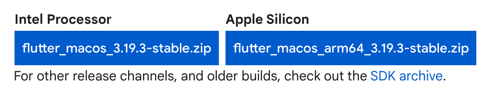
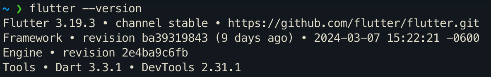
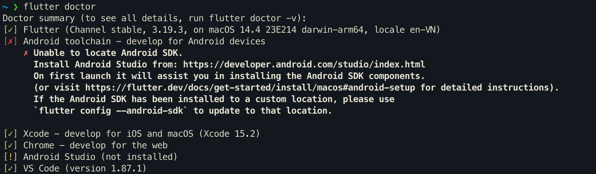
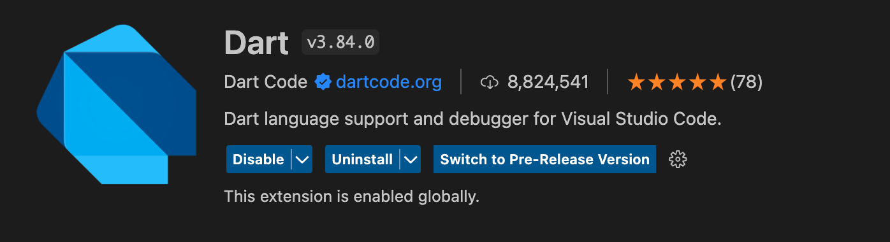
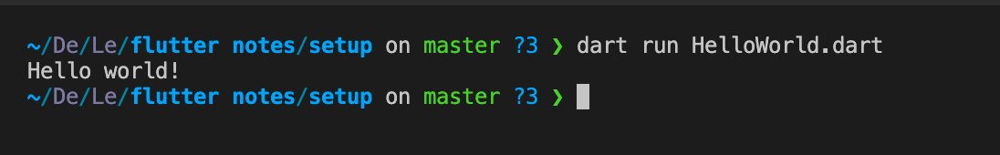

1. Cài đặt môi trường cho macOS
Bước 1: Truy cập Flutter documentation chọn tab Download and install để tải Flutter SDK tương ứng và giải nén vào thư mục bất kì

Bước 2: Cập nhật system cho flutter
- Chạy lệnh sau để edit
/.zshrc
nano $HOME/.zshrc
- Thêm dòng dưới và sau đó ấn tổ hợp phím
Ctrl + OvàCtrl + Xđể thoát
export PATH=$HOME/path/to/flutter/bin:$PATH
- reload lại
source .zshrc
-
Chạy lệnh
flutter -versionđể kiểm tra  -
Ngoài ra có thể dùng lệnh
flutter doctorđể kiểm tra các yêu cầu cho Fullter

2. Cài đặt và chạy Dart trên VSCode Bước 1: Tìm và cài đặt Dart hoặc Flutter từ Extension của VSCode

Bước 2: Tạo file .dart và ấn nút run để chạy

hoặc cũng có thể chạy bằng dòng lệnh
dart run HelloWorld.dart
